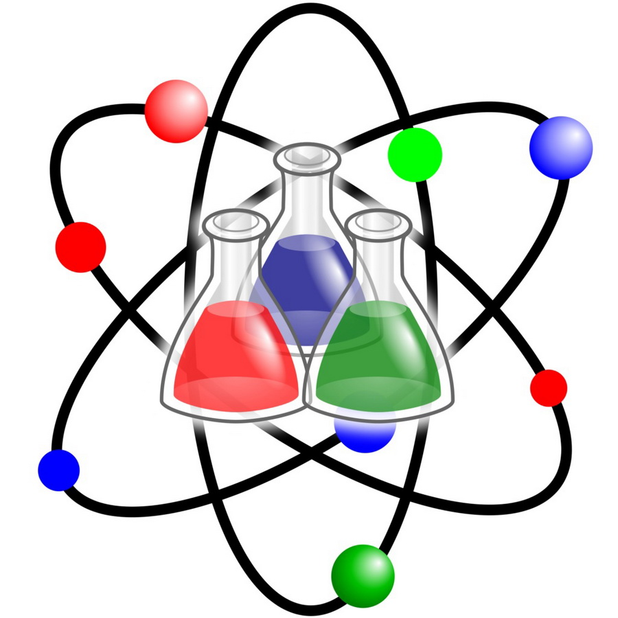

Химия — это не просто формулы в школьном учебнике и строгие лабораторные анализы. Это фундаментальная наука о веществе, его свойствах и удивительных превращениях, которая связывает воедино физику, биологию и медицину. Всё, что нас окружает, от воздуха до современных гаджетов, создано благодаря пониманию химических процессов.
Узнать подробнее.jpg) Почему химия важна для каждого
Почему химия важна для каждого
Химия представляет собой фундаментальную основу материального мира, без которой невозможно представить существование современной цивилизации, развитие технологий и саму жизнь человека. Всё, что нас окружает, состоит из химических веществ, непрерывно взаимодействующих друг с другом. Даже человеческий организм является сложнейшей лабораторией, где каждую секунду происходят миллионы реакций, обеспечивающих дыхание, пищеварение, движение и эмоции. Понимание этих процессов дает человечеству ключ к управлению силами природы, позволяя превращать сырые материалы в упорядоченный мир комфорта, безопасности и прогресса. Исторически именно развитие химии позволило совершить колоссальный рывок в увеличении продолжительности жизни. Создание антибиотиков, синтетических лекарств и вакцин полностью изменило медицину. Сегодня тонкий органический синтез позволяет создавать высокоточные препараты, а химическая промышленность снабжает врачей стерильными полимерами, биосовместимыми имплантатами и хирургическими нитями. Не менее важную роль химия играет в обеспечении продовольственной безопасности планеты. Производство минеральных удобрений радикально повысило урожайность почв, а средства защиты растений помогают бороться с вредителями, предотвращая голод. В пищевой индустрии химические знания применяются для сохранения свежести продуктов, защиты от бактерий и порчи при транспортировке. Повседневный быт человека также соткан из продуктов химического производства. Мыло, стиральные порошки и косметика работают на основе поверхностно-активных веществ и целенаправленно созданных формул. Синтетические волокна, такие как нейлон и полиэстер, делают одежду прочной, легкой и способной защищать в экстремальных условиях. Технический прогресс и транспорт полностью зависят от изучения химических процессов. Переработка нефти дает топливо, а электрохимия движет вперед индустрию гаджетов и электромобилей, создавая мощные аккумуляторы. Авиация и космонавтика невозможны без сверхпрочных композитов и легких сплавов. Столкнувшись с экологическими вызовами, именно химия предлагает решения для спасения планеты, разрабатывая методы очистки воды, технологии утилизации отходов и биоразлагаемые материалы. Таким образом, химия является универсальным языком материальной Вселенной, знание которого необходимо каждому человеку для критического мышления, личной безопасности и осознанного выбора.

Химия — это наука о веществах, их свойствах, строении и превращениях друг в друга. Она изучает, из чего состоит окружающий мир и как одни элементы взаимодействуют с другими в процессе химических реакций.
Подробнее